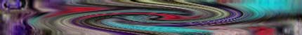

The Emergence of ALife
An Interview with Kenneth E. Rinaldo
by PDQuick
Kenneth E. Rinaldo is a transdiciplinary artist living and
working in San Francisco. He is currently on the Board of Directors of YLEM,
an international group of artists using science and technology. His works
have been shown in the U.S. and abroad at such shows as Image Du Future
in Montreal, Canada, the V2 Dutch Electronic Arts Festival 1995, and SigGraph
1993 in Los Angeles and have been featured on television and magazines including
Wired, The Discovery Channel's Know Zone and Cnet. His academic background
includes Computer Science, Communications Research and Art. And he received
his MFA in Conceptual Art from San Francisco State University.
I first met Ken
Rinaldo in 1994 when I was co-curating an exhibition of interactive
electronic and digital media. I was immediately intrigued by The
Flock, an interactive A-life sculpture. Over the course of the exhibition,
I was able to spend a lot of time with them. And what was most striking
for me was the way they seemed to change from elegant flowing dancing beings
to spasmodic twitching creatures that recoiled when approached.
For this issue of Switch, I spoke with Ken about his work with artificial
life, his ideas about artist's and their role in scientific research and
television amongst other things.